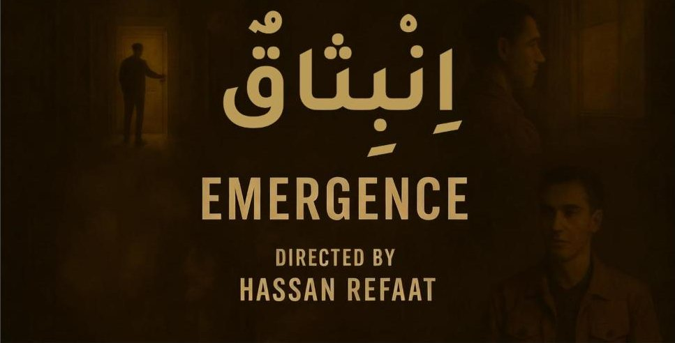

Emergence
انبثاقShort film, 2025
A young man walks a dark corridor lined with doors. Each one opens onto a memory he would rather not revisit: lost love, fading passion, loneliness, poverty. Every door makes him heavier and stronger, until the last one opens onto light.
- Role
- Writer, director, AI artist, editor
- Tools
- ChatGPT image generation, Higgsfield
- Festivals
- Official selection, Miami Art Tech Summit. Semi-finalist, Youth Empowerment Films & Songs Competition.
Full film, 2:53. Sound on.
Frames from the film. Select one to enlarge.